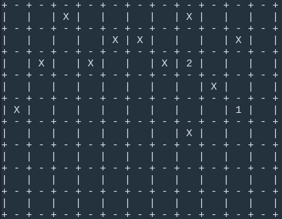

Build an Adversarial Game Playing Agent
Synopsis
In this project, you will experiment with adversarial search techniques by building an agent to play knights Isolation. Unlike the examples in the lecture where the players control tokens that move like chess queens, this version of Isolation gives each agent control over a single token that moves in L-shaped movements--like a knight in chess.
Isolation
In the game Isolation, two players each control their own single token and alternate taking turns moving the token from one cell to another on a rectangular grid. Whenever a token occupies a cell, that cell becomes blocked for the remainder of the game. An open cell available for a token to move into is called a "liberty". The first player with no remaining liberties for their token loses the game, and their opponent is declared the winner.
In knights Isolation, tokens can move to any open cell that is 2-rows and 1-column or 2-columns and 1-row away from their current position on the board. On a blank board, this means that tokens have at most eight liberties surrounding their current location. Token movement is blocked at the edges of the board (the board does not wrap around the edges), however, tokens can "jump" blocked or occupied spaces (just like a knight in chess).
Finally, agents have a fixed time limit (150 milliseconds by default) to search for the best move and respond. The search will be automatically cut off after the time limit expires, and the active agent will forfeit the game if it has not chosen a move.
Getting Started (Workspaces)
The easiest way to complete the project is to use the Udacity Workspace in your classroom. The environment has already been configured with the required files and libraries to support the project. If you decide to use the Workspace, then you do NOT need to perform any of the setup steps for this project. Skip to the section with instructions for completing the project.
Getting Started (Local Environment)
If you would prefer to complete the exercise in your own local environment, then follow the steps below:
Open your terminal and activate the aind conda environment (OS X or Unix/Linux users use the command shown; Windows users only run
activate aind)$ source activate aindDownload a copy of the project files from GitHub and navigate to the project folder. (Note: if you've previously downloaded the repository for another project then you can skip the clone command. However, you should run
git pullto receive any project updates since you cloned the repository.)(aind) $ git clone https://github.com/udacity/artificial-intelligence (aind) $ cd "artificial-intelligence/Projects/3_Game Playing"
Instructions
You must implement an agent in the CustomPlayer class defined in the game_agent.py file. The interface definition for game agents only requires you to implement the .get_action() method, but you can add any other methods to the class that you deem necessary. You can build a basic agent by combining minimax search with alpha-beta pruning and iterative deepening from the lecture.
NOTE: Your agent will not be evaluated in an environment suitable for running machine learning or deep learning agents (like AlphaGo).
The get_action() Method
This function is called once per turn for each player. The calling function handles the time limit and
def get_action(self, state):
import random
self.queue.put(random.choice(state.actions()))- DO NOT use multithreading/multiprocessing (the isolation library already uses them, which may cause conflicts)
- ALL of the functions you add should be created as methods on the CustomPlayer class.
Initialization Data
Your agent will automatically read the contents of a file named data.pickle if it exists in the same folder as my_custom_player.py. The serialized object from the pickle file will be assigned to self.data. Your agent should not write to or modify the contents of the pickle file during the search.
Saving Information Between Turns
The CustomPlayer class can pass the internal state by assigning the data to the attribute self.context. An instance of your agent class will carry the context between each turn of a single game, but the contents will be reset at the start of any new game.
def get_action(...):
action = self.mcts()
self.queue.put(action)
self.context = object_you_want_to_save # self.context will contain this object on the next turnPick an Experiment
Select at least one of the following to implement and evaluate in your report. (There is no upper limit on the techniques you incorporate into your agent.)
Option 1: Develop a custom heuristic (must not be one of the heuristics from lectures, and cannot only be a combination of the number of liberties available to each agent)
- Create a performance baseline using
run_search.py(with thefair_matchesflag enabled) to evaluate the effectiveness of your agent using the #my_moves - #opponent_moves heuristic from lecture - Use the same process to evaluate the effectiveness of your agent using your own custom heuristic
Hints:
- Research other games (chess, go, connect4, etc.) to get ideas for developing good heuristics
- If the results of your tests are very close, try increasing the number of matches (e.g., >100) to increase your confidence in the results
- Experiment with adding more search time--does adding time confer any advantage to your agent over the baseline?
- Augment the code to count the number of nodes your agent searches--is it better to search more or fewer nodes? How does your heuristic compare to the baseline heuristic you chose?
Option 2: Develop an opening book (must span at least depth 4 of the search tree)
- Write your own code to develop an opening book of the best moves for every possible game state from an empty board to at least a depth of 4 plies
- Create a performance baseline using
run_search.py(with thefair_matchesflag disabled) to evaluate the effectiveness of your agent using randomly chosen opening moves. (You can use any heuristic function, but you should use the same heuristic on your agent for all experiments.) - Use the same procedure to evaluate the effectiveness of your agent when early moves are selected from your opening book
Hints:
- Developing an opening book can require long run-times to simulate games and accumulate outcome statistics
- If the results are very close, try increasing the number of matches (e.g., >100) to increase your confidence in the results
Adding a basic opening book
- You will need to write your own code to develop a good opening book, but you can pass data into your agent by saving the file as "data.pickle" in the same folder as
game_agent.py. Use the picklemodule to serialize the object you want to save. The pickled object will be accessible to your agent through theself.dataattribute.
For example, the contents of dictionary my_data can be saved to disk:
import pickle
from isolation import Isolation
state = Isolation()
my_data = {state: 57} # opening book always chooses the middle square on an open board
with open("data.pickle", 'wb') as f:
pickle.dump(my_data, f)Option 3: Build an agent using advanced search techniques (for example killer heuristic, principal variation search (not in lecture), or monte carlo tree search (not in lecture))
- Create a performance baseline using
run_search.pyto evaluate the effectiveness of a baseline agent (e.g., an agent using your minimax or alpha-beta search code from the classroom) - Use
run_search.pyto evaluate the effectiveness of your agent using your own custom search techniques - You must decide whether to test with or without "fair" matches enabled--justify your choice in your report
Hints:
- If the results are very close, try increasing the number of matches (e.g., >100) to increase your confidence in the results
- Experiment with adding more search time--does adding time confer any advantage to your agent?
- Augment the code to count the number of nodes your agent searches--does your agent have an advantage compared to the baseline search algorithm you chose?
Note:
- You MAY implement advanced techniques from the reading list at the end of the lesson (like Monte Carlo Tree Search, principal variation search, etc.), but your agent is being evaluated for performance_rather than _correctness. It's possible to pass the project requirements without using these advanced techniques, so project reviewers may encourage you to implement a simpler solution if you are struggling with the correct implementation. (That's good general advice: do the simplest thing first, and only add complexity when you must.)
Report Requirements
Your report must include a table or chart with data from an experiment to evaluate the performance of your agent as described above. Use the data from your experiment to answer the relevant questions below. (You may choose one set of questions if your agent incorporates multiple techniques.)
Advanced Heuristic
- What features of the game does your heuristic incorporate, and why do you think those features matter in evaluating states during the search?
- Analyze the search depth your agent achieves using your custom heuristic. Does search speed matter more or less than accuracy to the performance of your heuristic?
Opening book
- Describe your process for collecting statistics to build your opening book. How did you choose states to sample? And how did you perform rollouts to determine a winner?
- What opening moves does your book suggests are most effective on an empty board for player 1 and what is player 2's best reply?
Advanced Search Techniques
- Choose a baseline search algorithm for comparison (for example, alpha-beta search with iterative deepening, etc.). How much performance difference does your agent show compared to the baseline?
- Why do you think the technique you chose was more (or less) effective than the baseline?
Evaluation
Your project will be reviewed by a Udacity reviewer against the project rubric here. Review this rubric thoroughly, and self-evaluate your project before submission. All criteria found in the rubric must meet specifications for you to pass.
Self Test
In the section Submission you will find instructions to submit your project first to an auto-grader and eventually to a Udacity reviewer in the following sections. Before you proceed to the section it is a good idea to run some sanity checks on your code.
To perform the sanity check, from the terminal switch to directory containing your project files and follow the instructions below:
- ### Test Your Code Against An Agent
Run the following command:
```
$ run_match.py -o SELF
You can also choose GREEDY, RANDOM and MINIMAX as agents as your opponent. Make sure does not produce any errors.
2. ### Local Unit Test Cases:
Run the following command:
```
$ python -m unittest
```
Once again, ensure that there are no errors.
If there are errors, in either of the steps, use the instruction in the **Debug Your Agent** below to get more information.
## Debugging Your Agent
If you encounter an exception or a failed test case in either of the steps above, use the instruction below:
- In **my_custom_agent.py** add the following line:
```
from isolation import DebugState- In your implementation of get_action(), add the following three lines:
print('In get_action(), state received:') debug_board = DebugState.from_state(state) print(debug_board)
Now when you run a game using either the run_match.py script or by executing python -m unittest, the state of the game in the form of a nicely formatted board that looks like this:

The X's are positions that are already blocked and 1 and 2 represent the current positions of the competing agents. You can use this strategy to zero in the scenarios where the error(s) happen.
Once you have fixed the errors please make sure you delete or comment out the debugging code.
Submission
Before you can submit your project for review in the classroom, you must run the remote test suite & generate a zip archive of the required project files. Submit the archive in your classroom for review. (See notes on submissions below for more details.) From your terminal, run the command: (make sure to activate the aind conda environment if you're running the project in your local environment; workspace users do not need to activate an environment.)
$ udacity submitThe script will automatically create a zip archive of the required files (my_custom_player.py and report.pdf are required; data.pickle will be included if it exists) and submit your code to a remote server for testing. You can only submit a zip archive created by the PA script (even if you're only submitting a partial solution), and you must submit the exact zip file created by the Project Assistant in your classroom for review. The classroom verifies the zip file submitted against records on the Project Assistant system; any changes in the file will cause your submission to be rejected.
NOTE: Students who authenticate with Facebook or Google accounts must follow the instructions on the FAQ page here to obtain an authentication token. (The Workspace already includes instructions for obtaining and configuring your token.)